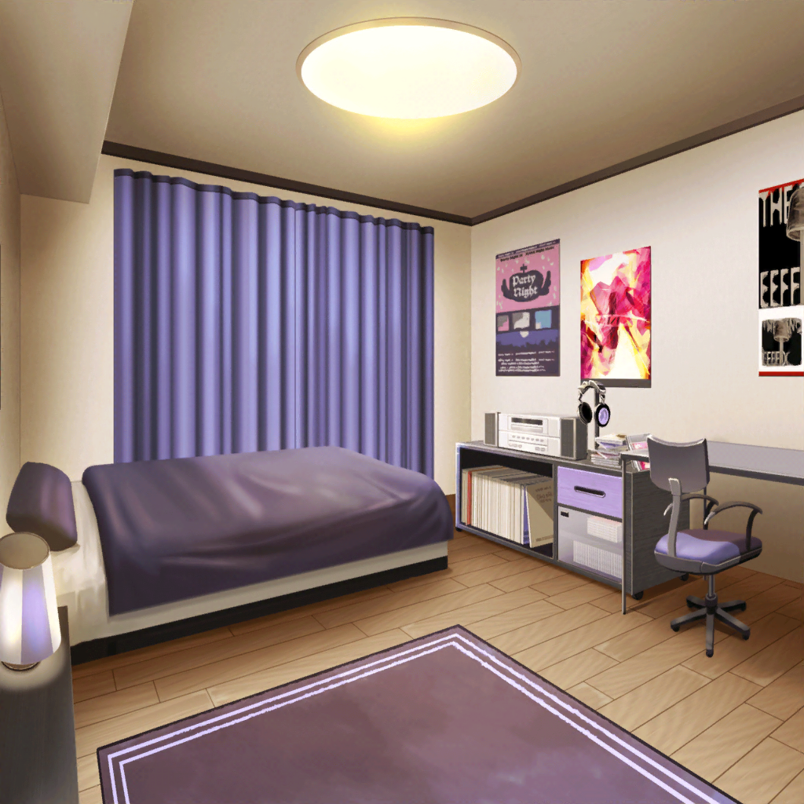

宇田川家 リビング
あこ
歌う資格がないって、どういうことなんだろう……？
それならどうして、あこ達に曲を聴かせてくれたのかなあ？
あこ
ん〜〜〜〜、考えてもわかんないっ！
りんりんにチャットしてみようっ！
あこ
『りんり〜ん！ 今日の友希那さん、なんだか
ヘンだったよね？』
燐子
『そうだね。今日聴かせてくれた曲について
思い悩んでいるようだったけど……』
あこ
『歌う資格がないってどういうことなんだろう？
友希那さんはあんなに歌が上手なのに』
燐子
『友希那さんの言っている資格、ってきっとうまいへたの
ことじゃないんだと思う』
あこ
『それじゃあ、どういうこと？』
燐子
『きっと気持ちのこと、なんじゃないかな。
あの曲……きっと、友希那さんにとって大切な曲なんだと
思う。だから……』
燐子
『もしかすると、歌うこと自体に、とても大きな
覚悟が必要なのかもしれないね』
あこ
覚悟……
あこ
『あこ達に、何かできることはないのかな？』
燐子
『……今は、見守ることしかできない。
友希那さんを信じて、待ってみよう』

氷川家 紗夜の部屋
紗夜
……１曲目と２曲目を入れ替えて……
つなぎのアレンジをこうして……
紗夜
……ダメね。３曲めをどの曲にしたとしても
いいアプローチができない
紗夜
……湊さんが聴かせてくれたあの曲が演奏できるなら……
紗夜
演奏技術が見合わないのであれば、そのレベルに
達するまで努力するまでのこと……
紗夜
湊さんは、一体何を気にしているの……？

湊家 友希那の部屋
友希那
……

燐子
きっと、友希那さんの歌声にあう、素敵な曲だと
思いました……！
燐子
わたし、友希那さんの歌声が好きです……！
繊細で、力強くて……ときには音楽を求めすぎるあまり、
まるで恋い焦がれているかのような焦燥感を感じる……
友希那
……あの曲……もう一度、聴いてみよう
友希那
……お父さん……お父さんは一体、どんな思いを
こめて、この曲を歌ったの……？
友希那の父
友希那？ 少しいいかな？
友希那
お父さん？
友希那の父
部屋から懐かしい曲が聴こえて、ついな。
もう１０年以上前の曲じゃないか
友希那
私、この曲を歌いたいと思ったの。でも……私には……
友希那の父
それなら歌えばいい。何をためらっているんだ？
友希那
この曲から感じる音楽への純粋な情熱……
それを私の歌声にのせて歌える自信がなくて
友希那の父
それならその思いをのせて歌えばいい
友希那
え？ でも……
友希那の父
それが今のお前の、この曲……それから音楽に対する
思いなんだろう。だったら、それを歌えばいい
友希那の父
どんな思いを抱えていたっていい。それをぶつけろ
友希那
私が未熟でも……？
友希那の父
完成されていなきゃ演奏できない音楽なんて
存在しないさ。ただ……お前がそれほどまでに技術や
精神的な未完成さを思い悩んでいるとしても……
友希那の父
その思いはとっても純粋で、素晴らしいものだと思うぞ
友希那
……！

リサ
友希那が真剣に悩んで向き合おうとしている気持ち。
それは誰よりも音楽に対して純粋だからだってこと
忘れないで
友希那の父
……長く喋ってしまったな。それじゃあ行くよ
友希那
……
友希那
もしもし、リサ？ 私よ
リサ
『うん？ どーしたの？ お父さんの曲のこと、
やっぱり不安？』
友希那
いいえ。もう大丈夫。
……今、お父さんにあなたに言われたことと同じことを
言われたわ
リサ
『えっ……？』
友希那
私が音楽を思う気持ちは純粋なものだ……とね
友希那
ありがとう、リサ
リサ
『うん。アタシは友希那を見守るって決めたんだから。
これくらいなんでもないよ』
リサ
『この先だって……友希那が道に迷ったときは、
アタシが助けたい。幼馴染って、そういうものじゃん？』
友希那
……ええ、そうね